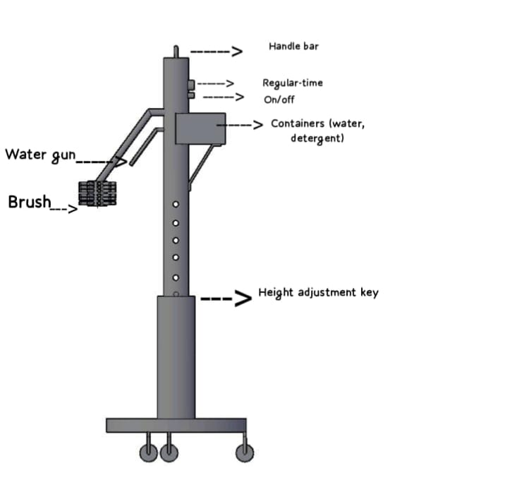
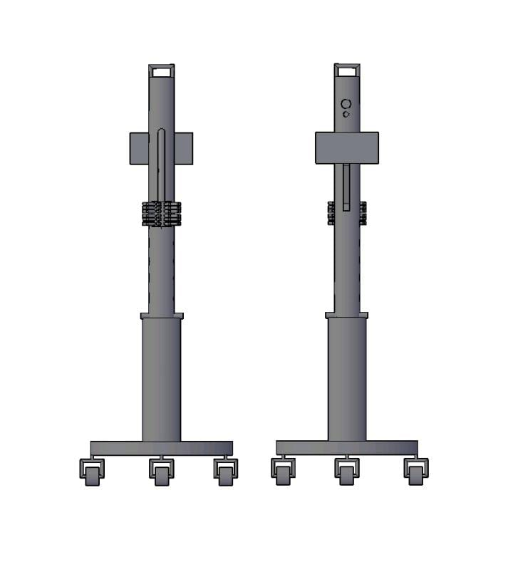
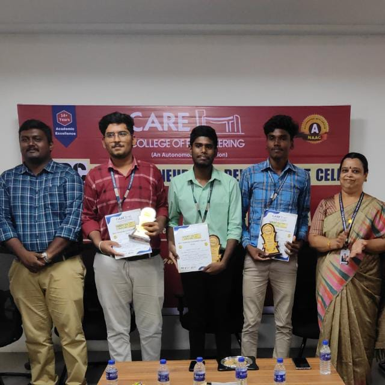

Public restrooms often suffer from hygiene issues due to inconsistent cleaning schedules and high usage rates. Traditional cleaning methods for urinal sinks rely on manual labor, which can be inefficient,cleaning by hand is also expensive and they suffer from health issues,potential health risks for users also
We are going to invent a machine “The automatic sink cleaner”.
Project involves creating a portable machine equipped with a brush that automatically cleans urinal sinks at set
intervals.
By using this machine instead of manual cleaning, we aim to improve hygiene and reduce the need for hand
cleaning.
Making restroom maintenance more efficient and convenient.
Our project was recognized and appreciated, and we secured First Prize in the Invent Competition conducted by the Entrepreneurship Development Cell of CARE College of Engineering.


